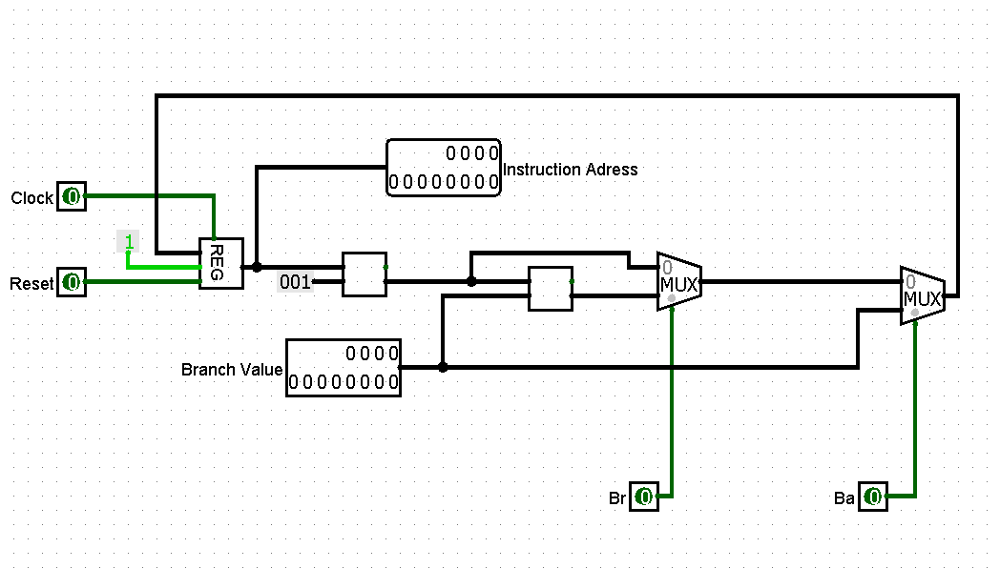
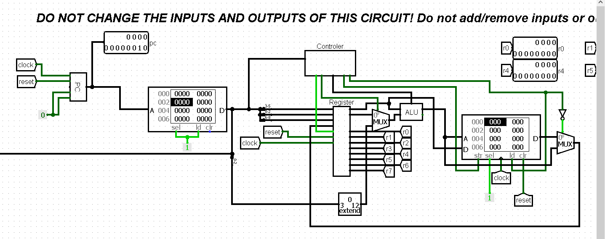
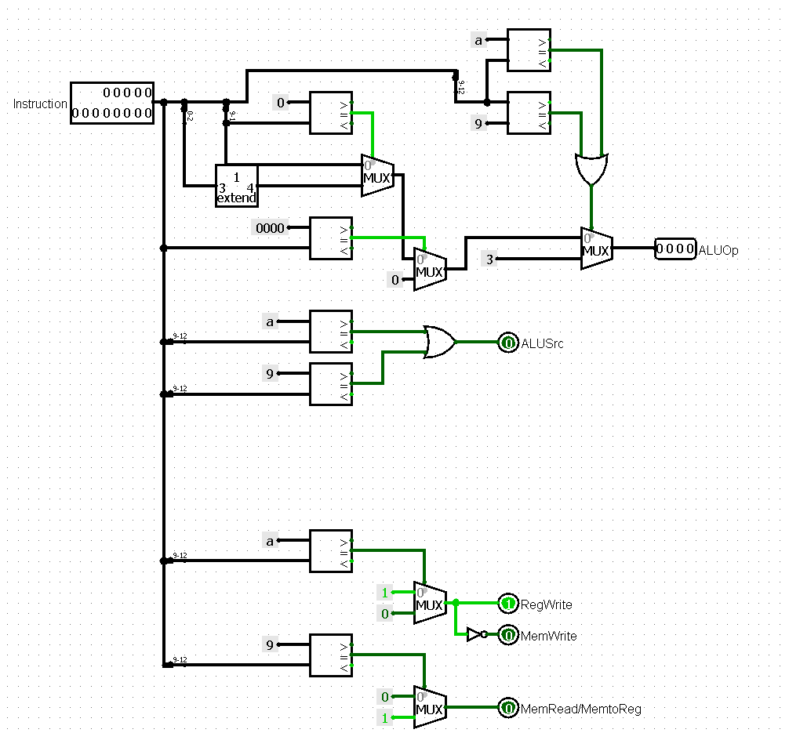

Dit verslag werd opgesteld door:
De oplossing bestaat uit het volgend bestand:
Voor het maken van de Simple Datapath is er ook gebruik gemaakt van de bestanden van vorige projecten:
Voor het maken van deze PC is er gebruik gemaakt van de 12-bit register. Door een constante 1 staat de 'write'
van dit register steeds op 1 en wordt het nieuwe instructie-adres er dus opgeslaan. Daarna gebeurt telkens de
berekening van het nieuwe instructie-adres. Als De inputs BrancheRelative en BrancheAbsolute beiden op 0 staan,
wordt er bij het instructie-adres de constante 1 opgeteld. Beide multiplexers kiezen de 0, aangezien BrancheRelative
en BrancheAbsolute beiden op 0 staan. Daarna wordt het nieuwe instructie-adres in het register 'gewrite'.
Iets anders doet zich voor wanneer de BranchRelative op 1 staat. Ook hier wordt weer eerst bij het instructieadres
de constante 1 opgeteld, maar daarna wordt deze som nog eens opgeteld met de gegeven Branch value. Dit gebeurt omdat
de eerste multiplexer nu op 1 staat. Daarna wordt het nieuwe instructie-adres weer op het register 'gewrite'.
Als laatste kan de BranchAbsolute nog op 1 staan. In dit geval wordt er niets gedaan met het huidig instructieadres,
maar wordt, doordat de tweede multiplexer op 1 staat, de BranchValue meteen in het register 'gewrite'.
Onze implementatie is hieronder te zien:

Eerst implementeren we de PC die we net hebben gemaakt. Deze berekent het instructie-adres om zo de juiste
instructie uit het instructie RAM te kunnen laden.
We zullen aan de hand van de controller het datapath bespreken. Er zijn eigenlijk vijf verschillende soorten instructies
die kunnen voorkomen: ofwel zijn alle 13 bits 0, ofwel zijn de 9-12de bit allemaal nullen, ofwel vormen de 9-12de bit
een getal kleiner of gelijk aan 8, ofwel vormen de 9-12de bit het getal 9, ofwel vormen de 9-12de bit het getal 10.
We overlopen alle gevallen:
In dit h-geval geeft de controller een AluOp code 000 mee. Er wordt dus een Zero commando uitgevoerd in de ALU. De ALUSource die bepaalt welke input b is bij de ALU bevat, doet er eigenlijk niet toe want de ALU geeft sowieso 0 terug. Voor de rest staat de RegisterWrite op 1 en de output van de ALU (hier 0) wordt dus meteen in het register 'gewrite'. De memory write staat uit. De MemoryRead staat uit, want er moet niets met de memory gebeuren. Tot slot is er nog de Memory to register. Deze zal enkel aanstaan bij een 'load word' en dus enkel wanneer er ook wordt geread. Daarom dat we ze samen hebben gezet. Ik zal de MemoryToRegister dus ook niet meer aanhalen in de rest van dit verslag.
De gevallen die hier voorkomen zitten al in de ALU met de nummers 9 tot en met 17. Om de juiste ALU Op-code te verkrijgen moeten dus we dus bit 0-2 sign-extenden met 1, waardoor je de getallen 9-17 krijgt. Dat zijn exact de getallen die nodig zijn om het juiste resultaat uit de ALU te krijgen. Ook hier is ALU source niet van belang, want hier wordt enkel het register $rs gebruikt in de ALU. Het resultaat moet dan telkens weer in het register geladen worden. De registerWrite staat op 1 en de output wordt rechtstreeks in het register 'gewrite'. De MemoryWrite en MemoryRead staan bijgevolg op 0.
Dit zijn alle gevallen in de ALU met code 1-8. De 9-12de bit bepalen dus de Op-code voor de ALU. Bij deze gevallen is de ALU source wel belangrijk, want bij al deze gebeurtenissen zijn er twee inputs nodig. Bij deze gevallen zal altijd register $rt gebruikt worden en de ALU source zal dus altijd op 0 staan (bovenste uit multiplexer). De output van de ALU moet ook hier weer rechtstreeks in het register 'gewrite' worden. De registerWrite staat op 1. De MemoryWrite en MemoryRead staan bijgevolg op 0.
In dit geval moet er een 'load word' uitgevoerd worden. We zullen een optelling nodig hebben bij de ALU (0011) om het adres te vinden waaruit we een word willen laden. Dit kan gevonden worden door $rs op te tellen met de immediate. Deze immediate is bit 0-2 die is omgezet naar een twaalf bit om in de ALU te kunnen steken. De memory write staat op 0. In dit geval zal de Memory Read op 1 springen, omdat we de word uit het berekende adres inlezen. Daarna wordt het in het register 'gewrite'.
In dit geval moet er een 'store word' uitgevoerd worden. We zullen een optelling nodig hebben bij de ALU (0011) om het adres te vinden waarop we $rs willen laden. Dit kan gevonden worden door $rs op te tellen met de immediate. Deze immediate is bit 0-2 die is omgezet naar een twaalf bit om in de ALU te kunnen steken. De memory write staat op 1, want we willen in de memory 'writen'. De Memory Read staat hier op 0 omdat we niets uit de memory moeten laden. De output van de ALU wordt ook nog in het register 'gewrite'.
Onze implementatie van de controller en het Datapath zijn hieronder te zien:

